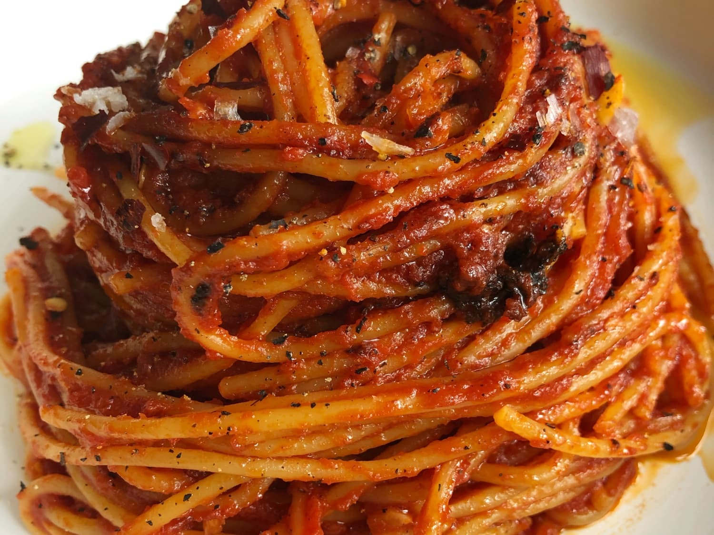

Spaghetti all'Assassina

Descrizione
Si tratta di un primo piatto che è entrato di recente a far parte della tradizione barese, oltre che un modo appetitoso per utilizzare il sugo avanzato. Il significato del suo nome non è ben chiaro, ma quel che è certo è che il suo gusto ha conquistato tutti: grazie alla cottura degli spaghetti direttamente in padella, infatti, otterrete una consistenza croccante e saporita particolarmente apprezzata dagli amanti della crosticina!
Ingredienti
- 320 gr di spaghetti
- 300 gr di sugo di pomodoro
- 1 spicchio di aglio
- 1 peperoncino rosso secco
- 25 gr di olio extravergine
Preparazione
- Per preparare gli spaghetti all'assassina cominciate riscaldando in un pentolino il sugo in avanzo preparato con un soffritto di cipolla e passata cotta per 30-40 minuti. Nel frattempo, in un'altra padella, soffriggete per un paio di minuti uno spicchio d'aglio con un giro d'olio
- Poi aggiungete gli spaghetti e bagnate subito con dell'acqua calda. Mescolate qualche istante per ammorbidire la pasta e poi versate un mestolo del sugo riscaldato
- Sbriciolate un peperoncino secco e continuate a bagnare la pasta con l'acqua calda come se voleste risottarla. A fine cottura eliminate l'aglio e tuffate la restante parte di sugo .
- Al bisogno regolate di sale e ultimate la cottura alzando la temperatura, lasciando bruciacchiare il fondo per rendere croccante e dorata la pasta. Ecco pronti i vostri spaghetti all'assassina, serviteli caldissimi